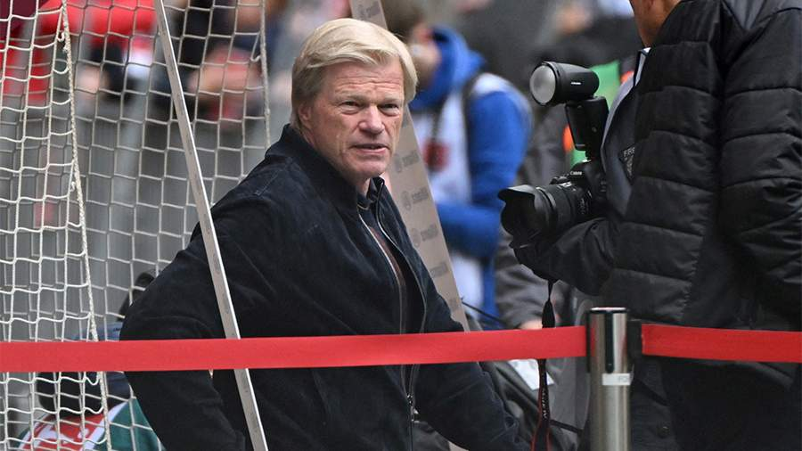

Оливер Кан и Хасан Салихамиджич покинут посты директоров «Баварии».Оливера Кана и Хасана Салихамиджича уволили из футбольного клуба «Бавария» вскоре после победы в чемпионате Германии. Об этом 27 мая сообщила пресс-служба команды.
Кан уволен с должности генерального директора. Его заменит финансовый директор Ян-Кристиан Дризен. Салихамиджич покинул пост спортивного директора. Для него замена пока не найдена.
«Решение расстаться с Оливером Каном было для наблюдательного совета каким угодно, только не легким. Но в связи с общим развитием ситуации мы пришли к решению о назначении нового руководителя. Хотим поблагодарить Оливера Кана за его преданность делу, идеи и всё, чего мы добились вместе. Он навсегда останется важной частью «Баварии», — сказал президент клуба Герберт Хайнер.Ранее в этот день «Бавария» в 11-й раз подряд стала чемпионом Германии. Перед заключительным туром мюнхенский клуб отставал от дортмундской «Боруссии» на два очка, но в итоге смог обойти ее благодаря победе над «Кельном».